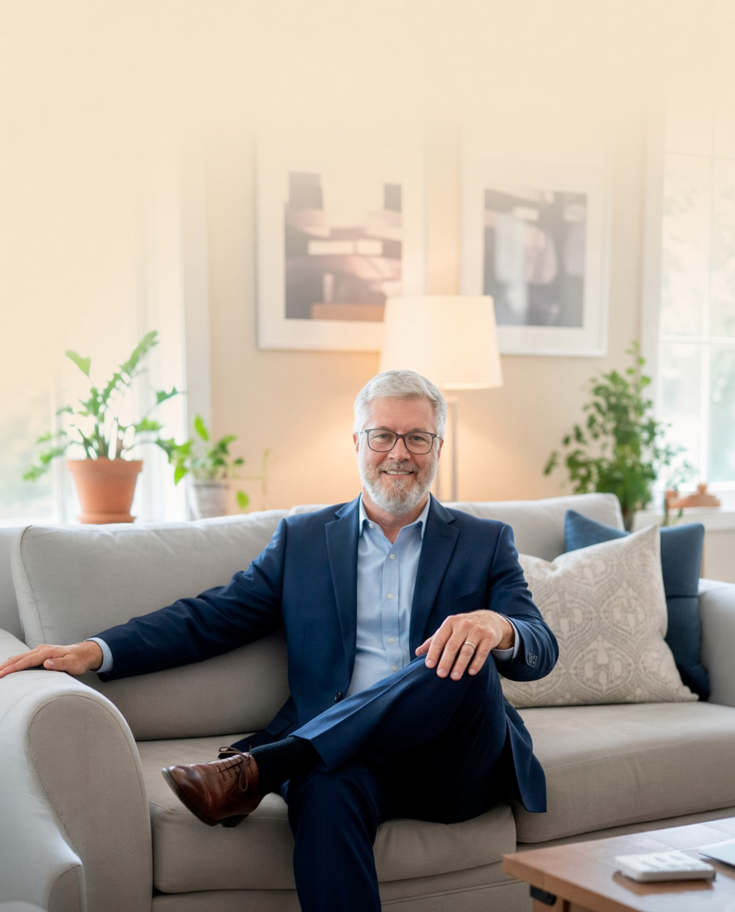

Atendimento presencial e online para jovens, adultos e idosos, conduzido por Alexandre Donnini — psicólogo formado pela Universidade Tuiuti do Paraná, com especialização em Gestalt-terapia e em Psicossociologia do idoso e das relações humanas.

Alexandre Donnini — Psicólogo Clínico
Alexandre Donnini é Psicólogo Clínico de orientação psicanalítica, formado pela Universidade Tuiuti do Paraná (UTP). Ao longo da carreira, aprofundou-se em Gestalt-terapia e em Psicossociologia do idoso e das relações humanas — um percurso que combina a escuta do inconsciente com uma atenção concreta às relações e às fases da vida.
Atende jovens, adultos e idosos, de forma presencial na região central de Curitiba e também online, respeitando o ritmo e a demanda de cada pessoa que busca o consultório.
Duas dimensões do trabalho clínico: a orientação que sustenta a escuta e o formato que se ajusta à sua rotina.
O trabalho parte da escuta do que a pessoa traz — sintomas, repetições, conflitos — como material a ser elaborado, não apenas resolvido. A Gestalt-terapia complementa esse olhar, trazendo atenção ao aqui-e-agora da experiência.
Atendimento presencial na região central de Curitiba e online para quem prefere ou precisa da distância. Indicado para jovens, adultos e idosos, com atenção especial às demandas próprias da terceira idade.
"Não é o que acontece com você, mas como você reage a isso que importa."Epicteto
Atendimento presencial mediante agendamento prévio, e atendimento online para todo o Brasil. Fale diretamente pelo WhatsApp ou registre seu interesse abaixo para receber um retorno.
Deixe seus dados e a modalidade de preferência. O retorno é feito diretamente por Alexandre ou pela equipe do consultório.